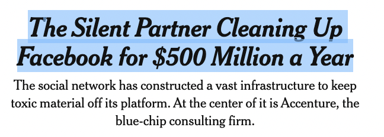
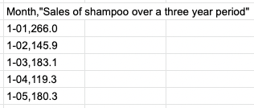
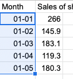
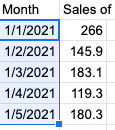

Data Cleaning
Tips for cleaning data
Contents
- Introduction
- About Data Cleaning
5 min - Remove formatting
5 min - Preserve tabular data
5 min - Type conversion
5 min - Find and replace with RegEx
5 min - Keep practicing
- References
Introduction
Review the following sections and perform the activities on your own or with your group.
Perform the task(s) when you see this 👉 emoji
Learning Objectives
Students who complete the following will be able to:
- Describe data cleaning and its benefits
- Compare data before and after cleaning
- List methods for data cleaning
- Improve and clean data for visualization or other use
Preparation
Complete the following to prepare for this module
About Data Cleaning
Data cleaning is a process that involves
- Identifying unfinished, unreliable, inaccurate, or non-relevant parts in a dataset, table, or database
- Removing or correcting the dirty or inaccurate data
Data cleaning can be performed via scripting or interactively with data cleaning tools.
Remove whitespace
Whitespace characters (tabs, spaces, line breaks) are essential to make text documents human-readable, but if you have too many they can really clutter up a dataset.
this is some
really dirty
data !
Replacing all the spaces, tabs, and line breaks ("carriage returns") in the example above by hand would be a lot of work in a big dataset. However, you can use simple find/replace tools in Atom to make short work of this.
👉 Try it out
- Copy the text in the example above into Atom
- Try to remove the three types of whitespace from the text using only the find / replace tools.
Hint

- Whitespace is invisible, but you can still copy / paste the characters into find / replace.
- To replace all the extra spaces, search for two spaces and replace with a single space.
Remove formatting
When getting data for a project, the goal is almost always to be able to reuse the data somehow. Usually this means pasting into a plain text document (e.g. csv or json), spreadsheet, or database.
Perhaps the simplest way to get data is to copy and paste. If you copy any formatted (a.k.a. "rich") text from the web or a document, then that formatting will be applied if you paste it into a document that supports the formatting.
 
To remove rich text formatting from copied text either
Use plain text:
Immediately paste the text into a plain text document, then select all and copy the unformatted text.
Use a supported app:
Edit > Paste without formatting, or (Google Sheets) Edit > Paste special > Paste values only
Preserve tabular data
Many times you will want to paste tabular data into a spreadsheet to be able to sort or further change the data using the columns. While you can paste tab-separated data and preserve the columns and rows, comma-separated data will not automatically be recognized as tabular. Two options to correct this issue:
Option 1: Save as CSV
If the text is comma-separated...
- Copy / paste the text into a new plain text file.
- Save the file as a
.CSV - Open the in Excel or Google Sheets.
Option 2: Find and Replace with a tab character
- Copy / paste the text into a new plain text file in Atom.
- Use Find to search for the delimiter
- Type a tab character and copy and paste it into the replace field.
Copy and paste a tab character into the replace field.

- Click Replace All

- Copy / paste the now tab-delimited data into your spreadsheet, which will recognize that we are pasting tab-separated content and add each field to its own column.

👉 Try it out - Try to paste some tabular data from
- this page into a sheet and preserve the column structure.
- these advertising categories so that all the tiers are represented in their own columns.
Type conversion
Once you import your data into a spreadsheet it will likely be treated as plain text. In order to sort, present, or chart the data you may need to use the spreadsheet application to recognize the data type.
For example, once a column is set as a date format you can select how you wish that date to be displayed:
 
Find and replace with RegEx
Sometimes you may need to use something more powerful to clean your data. This example uses Regular Expressions to search for specific instances of text.
👉 Try it out
Use RegEx function with find/replace in a text editor to clean these stock symbols
- Select all, copy, and paste them into a new document in Atom.
- Searching for all the pipes
|shows some of what we do and don't want.
- Enabled Regular Expressions and Case Sensitive in Atom
- Search for each of the following
[A-Z]- Any capitalized letters[A-Z]{1,5}- Any capitalized letters, one to five characters long^[A-Z]{1,5}- Any capitalized letters, one to five characters long, at the start of a string(^[A-Z]{1,5})- Wrap this match in a capture group(^[A-Z]{1,5})+(.*)- Add a second group that matches any number of any character
- Add to the replace
$1to copy the result of the first capture group
- And Find All / Replace All
We could make these stock symbols into a Javascript array using
- Find
(^[A-Z]{1,5})and Replace:'$1', - Adding
const arr = [to the beginning and];to the end
More Regex examples
Also see this converter: https://www.convertcsv.com/csv-to-json.htm
Search for a string
Replace line 1 with line 2
https://code.jquery.com/jquery-3.5.1.min.js
https://ajax.googleapis.com/ajax/libs/jquery/3.6.0/jquery.min.js
With this find / replace
http(.*)jquery(.*).js
https://ajax.googleapis.com/ajax/libs/jquery/3.6.0/jquery.min.js
Remove and replace characters
Replace characters in line 1 with line 2
javascript-1/1-1-variables/
topics/variables/
With this find / replace
javascript-1/([0-9])-([0-9])-
topics/
Remove and replace characters
Remove "" and replace - characters in line 1
"1-03"
1,03
With this find / replace
"(.*)-(.*)",
$1, $2,
Swap the order
Change line 1 > line 2
<p>First / Second</p>
<p>Second | First</p>
With this find / replace
<p>(.*) / (.*)</p>
<p>$2 | $1</p>
Prepare a table for Javascript
Replace all the tabs
adjective color animal
sad red dog
furtive green cat
cautious blue rabbit
happy rooster
adventurous gazelle
aardvark
sea lion
With this find / replace (the tab is hidden) and then add additional syntax and copy / paste.
', '
let options = {
adjective: ['sad', 'furtive', 'cautious', 'happy', 'adventurous'],
color: ['red', 'green', 'blue'],
animal: ['dog', 'cat', 'rabbit', 'rooster', 'gazelle', 'aardvark', 'sea lion']
}
Metacharacters
Use a backslash to escape metacharacters. To match (123) not 123
\(123\)
Change line 1 > line 2
<p>[slides](../slides/data-cleaning.html)</p>
<p><a href="../slides/data-cleaning.html">slides</a></p>
With this find / replace
<p>\[slides\]\(../slides/(.*)\)</p>
<p><a href="../slides/$1">slides</a></p>
Other issues
Other issues that aren't covered here:
- Spelling and grammar issues, which make searching, find / replace, and any other actions that rely on string identification difficult.
Keep practicing
- Learn Computing: Data Basics slides | markdown
- Learn Computing: Data Types slides | markdown
- Learn Computing: Data Cleaning slides | markdown
- Learn Computing: APIs slides | markdown
References
- Towards Data Science The Ultimate Guide to Data Cleaning
- Tableau Guide To Data Cleaning: Definition, Benefits, Components, And How To Clean Your Data